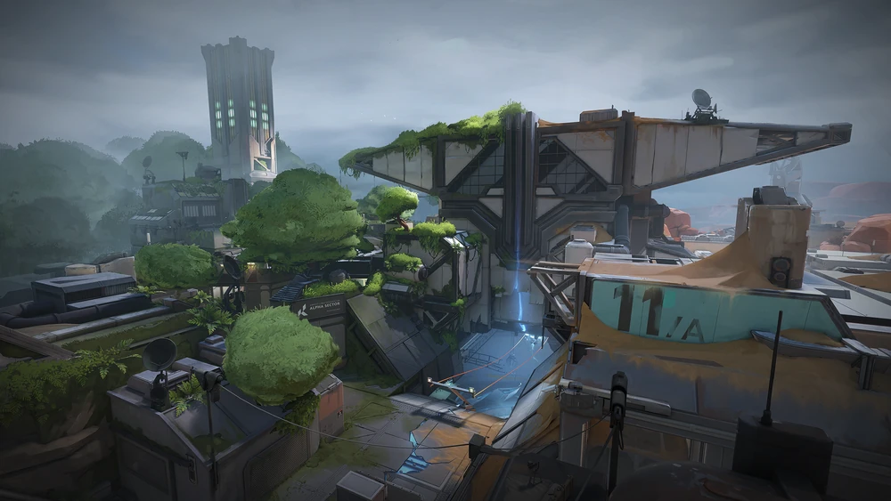
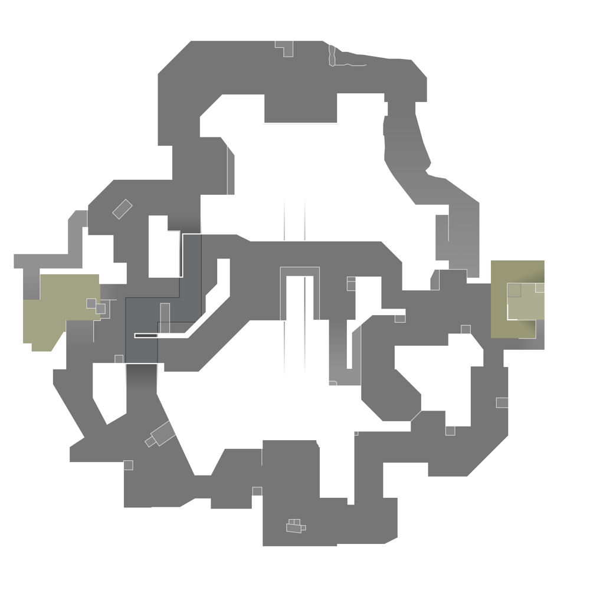

Fracture
🌙 Dark Mode
🏠 Home
🗺️ All Maps
Full Map

Fracture's unique design splits up the map into four neutral quadrants; four central areas between the quadrants that contain the sites and Attacker spawns, and a central zone where Defenders spawn.
Mini Map
